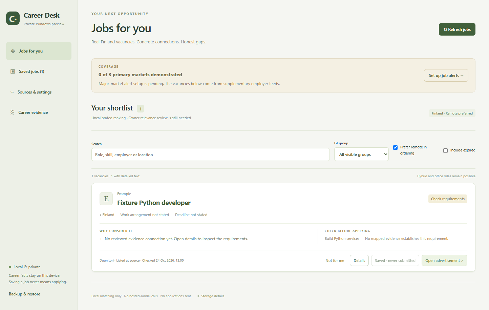

Career Desk: implementation evidence
Prepared 28 October 2026 from the private Windows application source, dated implementation reports, representative tests and a separately inspected Interview Coach prototype. This is a portfolio summary of documentary evidence, not a fresh execution report or an independent audit. Private source files are not distributed.
What was inspected
Application HEAD: de4a84d0209cf6a7d09c12f9a8f2c5d8c6663975, with later uncommitted mail-authentication, refresh and Duunitori fixes. HEAD alone does not identify those fixes; the internal research record retains file hashes and the dirty-state inventory.
Selected implementation includes the Electron application boundary, SQLite persistence, read-only selected-document import, deterministic requirement matching, Graph alert intake, URL normalization and replay tests. The matcher returns Lead — details needed before assessing an incomplete vacancy. Local review and explicit qualifiers govern detailed matching; ranking is uncalibrated.
Reconciling the dates
The 24 October README says real mailbox delivery and publisher templates were unverified. The later Duunitori alert ingestion correction report, dated 26 October 2026, documents authenticated access with the existing delegated Mail.Read connection and genuine Duunitori MIME. That later report establishes dated Duunitori delivery evidence; it does not establish every Slice 1 acceptance criterion.
Correction and authenticated replay
The reported alert was already ingested. The former status counted candidates accepted in the current refresh and did not explain previously consumed messages. A genuine-template investigation also found image-first deduplication retaining a URL-slug title and normalization retaining personalized query parameters.
The correction prefers textual vacancy anchors, strips personalized/tracking values from public references, separates processing counters, and records delivery consumption. Replay preserves job and snapshot identities, notes and statuses.
- Replay into the backed-up application database: 8 new leads, 9 existing leads corrected, 17 persisted Duunitori leads.
- Repeated replay: 0 created / 0 corrected.
- A separate empty test database and packaged GUI check documented fresh creation, original links, repeat refresh/replay and restart persistence.
- The genuine template contained two new matches plus six publisher recommendations. These are vacancy leads, not eight proven new search matches.
Fetched MIME bodies, successfully parsed messages, already consumed deliveries, duplicate vacancies, newly stored leads and corrected leads are separate counts with different denominators. A scan success is not the same as new job creation.
Historical verification and remaining limits
The report records a 77-test baseline, 24 focused ingestion tests, 101 final unit/integration tests, typecheck/build, six existing packaged GUI journeys and separate authenticated pipeline/preservation checks. These are historical project checks, not fresh portfolio checks. A requested independent code review did not complete during that implementation run.
A repository-local GUI profile initially failed to reopen with a read-only-database error. A normal temporary profile passed restart persistence; the report states the production database remained writable. This does not resolve every possible environment issue.
All alert candidates remain Lead — details needed. Alert ingestion does not prove full advertisement retention, matching accuracy, current availability or owner relevance. Jobly and Työmarkkinatori setup/template evidence is separate. Automatic applications and official reporting are not implemented.
Privacy and the application image

The site does not include private fixtures, mailbox identities, operational databases, credentials, interview materials or career records. The application’s Graph permission covers the signed-in mailbox; selected-folder filtering is an application boundary. Windows-protected tokens are kept outside SQLite/backups.
Separate Interview Coach prototype
Selected source and the October 26 implementation/profile-import reports support a standalone local web rehearsal prototype with browser-side profile import, explicit optional context sharing, expiring preview/consent, question progression and feedback. It is separate from Electron Slice 1. Its recorded verification uses mocked responses and browser checks. Live API compatibility, coaching quality, billing and latency are not verified here; no model call was made.
Attribution
Matias directed requirements and development with substantial AI collaboration across implementation, investigation, tests and review. These records do not establish personal authorship of every change. Professional Apps Script experience is supporting background, without an inferred business-impact metric.